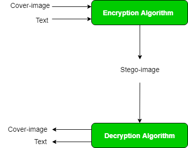

The word Steganography is derived from two Greek words- ‘stegos’ meaning ‘to cover’ and ‘grayfia’, meaning ‘writing’, thus translating to ‘covered writing’, or ‘hidden writing’. Steganography is a method of hiding secret data, by embedding it into an audio, video, image or text file. It is one of the methods employed to protect secret or sensitive data from malicious attacks.
How is it different from cryptography?
Cryptography and steganography are both methods used to hide or protect secret data. However, they differ in the respect that cryptography makes the data unreadable, or hides the meaning of the data, while steganography hides the existence of the data.
In layman’s terms, cryptography is similar to writing a letter in a secret language: people can read it, but won’t understand what it means. However, the existence of a (probably secret) message would be obvious to anyone who sees the letter, and if someone either knows or figures out your secret language, then your message can easily be read.
If you were to use steganography in the same situation, you would hide the letter inside a pair of socks that you would be gifting the intended recipient of the letter. To those who don’t know about the message, it would look like there was nothing more to your gift than the socks. But the intended recipient knows what to look for, and finds the message hidden in them.
Similarly, if two users exchanged media files over the internet, it would be more difficult to determine whether these files contain hidden messages, than if they were communicating using cryptography.
Crpytography is often used to supplement the security offered by steganography. Crypography algorithms are used to encrypt secret data before embedding it into cover files.
Image Steganography –
As the name suggests, Image Steganography refers to the process of hiding data within an image file. The image selected for this purpose is called the cover-image and the image obtained after steganography is called the stego-image.
How is it done?
An image is represented as an N*M (in case of greyscale images) or N*M*3 (in case of colour images) matrix in memory, with each entry representing the intensity value of a pixel. In image steganography, a message is embedded into an image by altering the values of some pixels, which are chosen by an encryption algorithm. The recipient of the image must be aware of the same algorithm in order to known which pixels he or she must select to extract the message.

Detection of the message within the cover-image is done by the process of steganalysis . This can be done through comparison with the cover image, histogram plotting, or by noise detection. While efforts are being invested in developing new algorithms with a greater degree of immunity against such attacks, efforts are also being devoted towards improving existing algorithms for steganalysis, to detect exchange of secret information between terrorists or criminal elements.